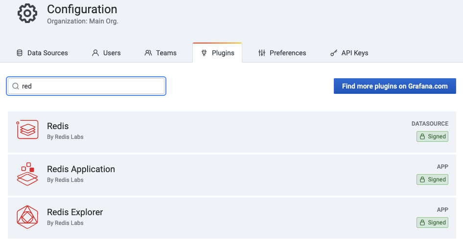
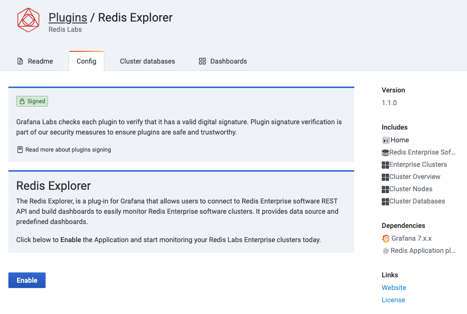

Developing Redis Explorer plug-in for Grafana¶


Developing Explorer plug-in involves setting up the development environment (which can be either Linux-based or macOS-based), building and running tests.
Install Grafana¶
Grafana can be used in Docker or installed locally.
-
Follow Installation instructions to install and start Grafana
-
Open Grafana UI in web-browser
http://X.X.X.X:3000
Clone repository¶
git clone https://github.com/RedisGrafana/grafana-redis-explorer.git
Build Explorer¶
-
Install the latest version of Node.js using Node Version Manager or download binaries
-
Install
yarnglobally
npm install yarn -g
- Install dependencies
yarn install
- Build frontend components
yarn build
Update local Grafana Configuration¶
- Move distribution to Grafana's
plugins/folder
mv dist/ /var/lib/grafana/plugins/redis-explorer
- Add
redis-explorerto allowed unsigned plugins
vi /etc/grafana/grafana.ini
[plugins]
;enable_alpha = false
;app_tls_skip_verify_insecure = false
# Enter a comma-separated list of plugin identifiers to identify plugins that are allowed to be loaded even if they lack a valid signature.
allow_loading_unsigned_plugins = redis-explorer
- Verify that plugin is registered
tail -100 /var/log/grafana/grafana.log
Start using Docker Compose¶
Docker Compose should be pre-installed following documentation.
yarn start:dev
Enable Redis Explorer plug-in¶
Redis Explorer plug-in is disabled by default.
Go to Configuration -> Plugins and choose Redis Explorer plug-in.

Click Enable to add side menu, Data Sources and import Dashboards.

Contact Us¶
If you have questions, enhancement ideas or running into issues, please open an issue.